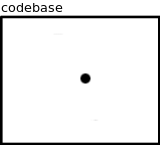

I hear that prople feel an uncontrollable urge to write unit tests nowaydays.
If you are one of those affected, spare few minutes and consider these reasons for NOT writing unit tests:
Return on investment of unit tests is an order(s) of magnitude lower than that of end-to-end tests.
If you write a single end-to-end test the execution of the test will probably cover a substantial part of the codebase:
If you write a single unit test, you cover just a small piece of the codebase:

If you are painting a house, you want to start with a biggest brush at hand and spare the tiny brush for the end to deal with fine details.
If you begin your QA work with unit tests, you are essentially trying to paint entire house using the finest chinese calligraphy brush.
End-to-end tests test the critical path. Unit test do not.
End-to-end tests typically simulate real-world usage scenarios. Thus, after running end-to-end test you have reasonable level of confidence that the product is going to work for the actual user.
If all you have are unit tests, you are pretty sure that all the individual gears inside the project work as expected. However, you have no idea whether the project as a whole works or not. It may well be that the user won't be able to performs a single task.
Yes, unit tests are rigorous and make sure that the component will work even in corner cases. However, user wants the product to work in common cases in the first place. If it fails in common cases it's not a product. It's a failure.
On the other hand, if the product fails in exotic cases that happen rarely or never at all, the defect can be tolerated and possibly fixed later on.
Unit tests ossify the internal architecture.
Imagine you have three components, A, B and C. You have written extensive unit test suite to test them.
Later on you decide to refactor the architecture so that functionality of B will be split among A and C. you now have two new components with diferent interfaces.
All the unit tests are suddenly rendered useless. Some test code may be reused but all in all the entire test suite has to be rewritten.
This way the unit test suite makes the product resistent to internal change. A programmer with limited time to allocate on tasks will consider the refactoring, then consider the cost of rewriting the test suite and place to whole endeavour into the "not worth it" mental slot.
I have seen a nice definition of "architecture" somewhere. It said that architecture is that what makes software able to change. If we embrace this point of view, unit tests can be considered to be a strictly an anti-architecture device.
There are things that can't be unit-tested.
Consider a protocol decoder. The protocol says "9th byte in the packet is called TLL".
The implementation does this:
int ttl = packet [8];
How are you supposed to unit test that? You can create a fake packet that has value 123 as 9th byte and then check that the decoder extracts TTL of 123. How is that different from testing that 1 == 1 though?
Protocol layout is a definition, not an algorithm and there's little to test there. What works though is interoperability testing: Take two implementations of the same protocol and check whether they speak each to another. And once again, we end up with end-to-end tests instead of unit tests.
Some stuff has no rigorous acceptance criteria.
Some of the code we write can be described in almost mathematical rigour: lists, hashmaps, 3D graphics et c.
Other code is not meant to be defined so rigorously. It's meant to feel good to the user. The most obvious example is GUI.
In such cases there's no right or wrong behaviour, there's only good or bad behaviour. And good or bad is much harder to define and test.
Admittedly, end-to-end tests and unit tests face the same problem here.
However, it's likely that the project has a high-level description of how the end user experience should look like. You can use that as basis for the tests.
Not so with individual components. After all, what does "end user experience" even mean for an internal component? In such case you should think of components as malleable pieces of code whose sole purpose it to enable globally (end-to-end) defined user experience. If the end-to-end experience is OK, the component is OK as well.
Unit tests are easy to measure and you should fear that.
If you are working in a hierarchically structured company, beware!
Progress on project has to be reported up the command chain and with a mainly spiritual activity such as software development it's pretty hard to find any hard metrics. How the hell are we supposed to measure QA?
And there's an easy solution to that: Report number and/or code coverage of unit tests!
But that leads into a trap: Once you start reporting code coverage of unit tests, you'll be immediately pressured to improve the metric, with the goal of achieving 100% coverage, despite all the problems with unit testing outlined above. The problems, after all, are not quantifiable, but the code coverage is.
It's hard to say how to fight the scenario above. Maybe keeping the unit test coverage so embarassingly low that nobody even thinks of reporting it to their superiors would help…
All that being said, unit tests are great for testing complex algorithmical tasks with strictly defined behaviour and lot of corner cases. Don't even think about implementing a red/black tree without an extensive suite of unit tests.
However, be frank: How often do you implement red/black trees?
And more generally: Is there really a rational justification for all the unit tests you are writing?
Think about it for a minute and you may spare yourself a lot of useless work.
EDIT: There seems to be some confusion about what is "unit test" and what is "end-to-end test". In the context of this article, "end-to-end" test means test that uses external interface of the product (one that is visible to the end user). "Unit test", on the other hand, means test that uses internal interfaces within the product (those which are not visible to the end user).
Jun 4th, 2014